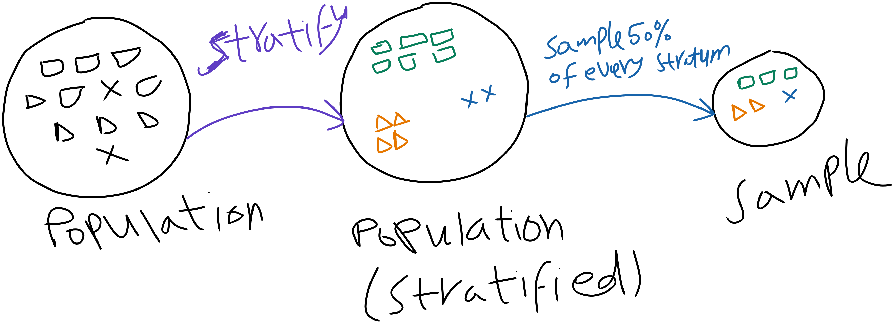

import random, os, sys
import shutil
from pathlib import Path
import numpy as np
import pandas as pd
import matplotlib.pyplot as plt
import seaborn as sns
import sklearn
import urllib
def init_session(RANDOM_SEED = 42):
RANDOM_SEED = RANDOM_SEED
np.random.seed(RANDOM_SEED)
random.seed(RANDOM_SEED)
import warnings
warnings.filterwarnings('ignore')
init_session()When starting a new code, try to import all the libraries you gonna need. The function init_session() is here to set the random seed to 42, so that the results are reproducible. It alse enables the warnings to be ignored (because this might be annoying).
Getting the data
First things first, you should get the data from the source. This source could be a sensor reading, a database, a website, or a file. In this case, the data is a CSV file. You can download it from the author’s github repository. The function DataFetcher() is here to download the data from the source and return a pandas dataframe. The function takes the source as an argument. The source is the URL of the data. The function checks if the data is already downloaded, if not, it downloads it and returns the dataframe. The function also creates a datasets folder if it doesn’t exist.
def DataFetcher(*, source):
file_name = Path(source).name #housing.tgz
compressed_path = Path(os.path.join("datasets", file_name))#datasets/housing.tgz
compressed_dir = str(compressed_path).split(".")[-2]#datasets/housing
if not compressed_path.is_file():
Path("datasets").mkdir(parents=True, exist_ok=True)
urllib.request.urlretrieve(source, compressed_path)
shutil.unpack_archive(compressed_path, os.path.join("datasets"))
return pd.read_csv(os.path.join(compressed_dir, file_name.split(".")[-2] + ".csv"))- Note
- You can notice the * being passed before the source as the first parameter. In fact this is not a parameter but it’s a feature in python >= 3.8 that makes the function take only keyword arguments. This is to make sure that the function is called with the source argument to avoid confusion when calling the function. In short, this enforces you to call all the function’s parameters after * using keyword arguments.
Now you can call the function like this:
url = "https://github.com/ageron/data/raw/main/housing.tgz"
housing = DataFetcher(source= url)housing is now a dataframe. You can check this using:
type(housing)Now, you can take a look at the data using the head() method. This method returns the first 5 rows of the dataframe. You can also pass the number of rows you want to see as an argument.
housing.head()Another handy function to summarize your data is the info() method. This method returns the number of rows, the number of columns, the column names, the data type of each column, and the number of non-null values in each column.
housing.info()You can also see the Dtype column in the output of the info() method. This column shows the data type of each column. You can see that the ocean_proximity column is an object. This means that it’s a string. You can check the unique values of this column using the unique() method.
housing.ocean_proximity.unique()or you can use the value_counts() method to get the number of instances of each value.
housing.ocean_proximity.value_counts()Since most columns (Also called features, dependent variable, predictors, attributes) are numerical, you can use the describe() method to get the summary of the numerical columns. This is quite useful to get a quick overview of the data. We can see that this is literally a sumaary of statistics. The count, mean, std, min, max, and the percentiles AKA descriptive statistics.
housing.describe()Creating a Test Set OR Sampling 101
After you get the data, you should keep a test set aside, this test set is used to evaluate the performance of your model. There are different ways to assess the quality of your test set. One such metric is the representativeness of it, which means that your test set should resemble the original data as much as possible. The test set should be kept aside until the end of the project to avoid the data snooping bias.
So, what is The data snooping bias? It is when you look at the test set and you tweak your model to perform better on the test set. This is not a good practice because you are not supposed to look at the test set until the end of the project.
There is a saying in statistics:
Torture the data until it confesses.This is quite the same thing you ar doing here. You are tweaking the performance on a test set until it confesses. This is not a good practice. As a gneral rule, the test set is used to evaluate the performance of your model, not to tweak it. So, you should keep it aside until the end of the project.
So, the question is how to choose a test set. On can split the data selectively, for example, you can choose the last 20% of the data as the test set. This is not a good practice because:
if you add new data, the last 20% of the data will change. So, you should not use this method. (your test result is not reproducible).
If your data is not evenly distributed, you might be trabbed in selective bias. For example, if you have a dataset of 1000 instances and 20% of them are from California, and for your case those 200 instances are the last 200 instances in your data. The result is you will have 200 instances from California in the test set and no other data from anywhere else. This is not a good practice because you will have a biased test set. (non-representativeness of the test set).
The last reason is an example of a phenomenon called Sampling Bias,one form of a bigger term Selection Bias, which refers to a falw in the process of choosing the data. Sampling Bias is a selection bias in the process of sampling a subset (sample) from the original data (the population).
There are many ways to sample a subset from the original data. The most common ones are:
- Simple Random Sampling
- Stratified Random Sampling
- Systematic Random Sampling
- Cluster Sampling
- Multistage Sampling
The first two are of interest for us in this chapter. So let us start by the simplest case, the simple random sampling.
Simple Random Sampling
This process is quite simple. You just randomly select a subset of the data. This is the simplest way to sample a subset from the original data. You can do the following to sample a subset from the original data:
Shuffle the data based on the index.
np.random.permutation(len(data))will return a list of indices of the data shuffled.
Define the size of the test set. You can specify a ration (0.2) and multiply it by the length of the data.
int(len(data) * test_ratio)will return the size of the test set.
Generate two list of the indices; one for the training set and one for the test set.
test_indices = shuffled_indices[:test_set_size]will return the indices of the test set.train_indices = shuffled_indices[test_set_size:]will return the indices of the training set.
Use the indices to select the data from the original data.
data.iloc[train_indices]will return the training set dataframe.data.iloc[test_indices]will return the test set dataframe.
This works because train_indices is a list of integers, and the
ilocmethod takes a list of integers as an argument and returns the corresponding rows.
The following code illustrates the process of simple random sampling:
import numpy as np
def shuffle_and_split_data(data, test_ratio):
np.random.seed(42)
shuffled_indices = np.random.permutation(len(data))
test_set_size = int(len(data) * test_ratio)
test_indices = shuffled_indices[:test_set_size]
train_indices = shuffled_indices[test_set_size:]
return data.iloc[train_indices], data.iloc[test_indices]There are a problem with this approach:
- If you run the program again, it will generate a different test set! Over time, you will get to see the whole dataset
(data snooping bias again!!!), which is what we want to avoid.
We can mitigate this problem by one of the following solutions:
Save the test set on the first run and then load it in subsequent runs.
- The problem here is that, loading the test set every time is a waste of time and space. So, you should only do this if the dataset is quite small.
Set the random number generator’s seed (e.g.,
np.random.seed(42)before callingnp.random.permutation()) so that it always generates the same shuffled indices.- This could be tricky to understand why this solution is not perfect. So, let us try it:
train_1, test_1 = shuffle_and_split_data(housing, 0.2)- Now, let us run the code again:housing = DataFetcher(source=url)
train_2, test_2 = shuffle_and_split_data(housing, 0.2)
print(train_1.equals(train_2))
test_1.equals(test_2)- Use each instance’s identifier to decide whether or not it should go in the test set (assuming instances have a unique and immutable identifier). For example, you could compute a hash of each instance’s identifier, keep only the last byte of the hash, and put the instance in the test set if this value is lower or equal to 51 (256 * 0.2 = 51.2). This ensures that the test set will remain consistent across multiple runs, even if you refresh the dataset. The new test set will contain 20% of the new instances, but it will not contain any instance that was previously in the training set.
Stratified Random Sampling
The following image illustrates the process of stratified random sampling:

Exploring the data
Next stage is to gain some insights by looking at your data. This is one of the most important steps in the machine learning pipeline. The effect of this step is that it will unlock some structure in the data, like the outliers, the missing values, the noise, and the correlation between the features. This will help you in the next steps of the pipeline.
We shall start by visualizing the distribution of the features. This is done by plotting the histogram of each feature. The hist() method is used to plot the histogram. The bins argument is used to specify the number of bins. The figsize argument is used to specify the size of the figure. The plt.show() is used to display the figure.
housing.hist(bins=50, figsize=(10,8))
plt.tight_layout()
plt.show()Figure 1 is a histogram of the numerical features. We will dive into the kind of visualization that we should use according to the data type and the task in a separate blog post. For now, we can say that for numerical features, hisograms are the most suitable visualization type to use.